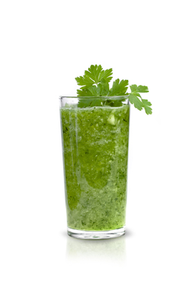
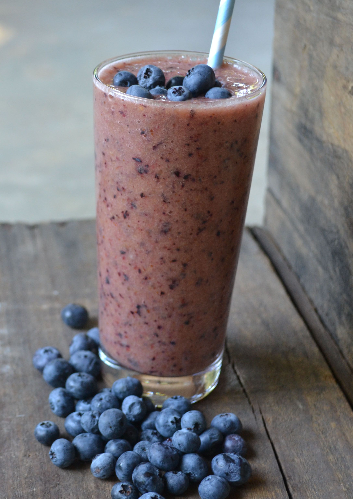
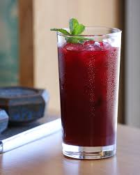

Our Elixirs
Green Tea Cooler

Chock full of vitamins and minerals, this elixir combines the healthful benefits of green tea with a twist of chamomile blossoms and ginger root.

Combining raspberry juice with lemon grass, citrus peel and roschips, this ice drink will make your mind feel clear and crisp.

Blueberries and cherry essence mixed into a base of elderflower herb tea will put you in a relaxed state of bliss in no time.

Wake up to the flavors of cranberry and hibiscus in this vitamin C rich elixir.
Voltar